Update Dialog Boxes
Add dialog boxes to your uifigure-based app by using functions such
as uialert and uiconfirm. These dialog box functions
are specifically configured to be used in apps. Creating dialog boxes using functions such as
errordlg and questdlg will continue to be
supported. However, there are benefits to using dialog boxes specific to app building. These
dialog boxes have additional customization options, including:
The ability to specify a custom icon
The ability to format text using HTML or LaTeX markup
The ability to write a callback that executes when the dialog box is closed
Also, these dialog boxes are displayed within the UI figure window that makes up your app.
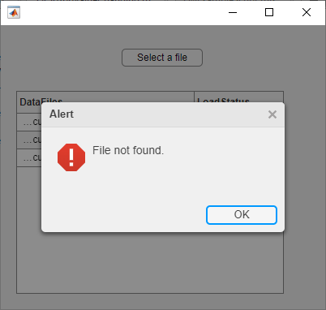
To take advantage of these benefits, as you transition your
figure-based app to use the uifigure function,
update the functions you call to create dialog boxes for your app. This table lists the
functions available for creating dialog boxes in figure-based apps and
the corresponding functions configured for uifigure-based apps.
figure-Based Apps | uifigure-Based Apps | ||
|---|---|---|---|
| Function | Example | Function | Example |
errordlg |
errordlg("Operation unsuccessful","Error"); 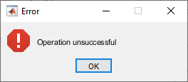 | uialert |
fig = uifigure; uialert(fig,"Operation unsuccessful","Error") 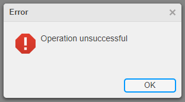 |
warndlg |
warndlg("This operation cannot be undone","Warning"); 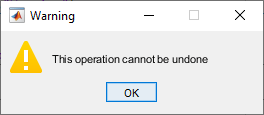 | uialert |
fig = uifigure; uialert(fig,"This operation cannot be undone","Warning", ... "Icon","warning") 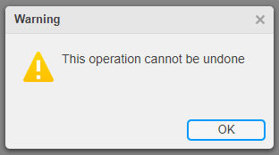 |
msgbox |
msgbox("Operation completed","Done","modal"); 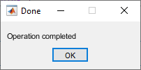 | uialert |
fig = uifigure; uialert(fig,"Operation completed","Done", ... "Icon","none") 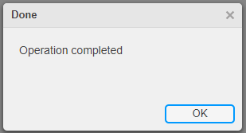 |
helpdlg |
helpdlg("Consider using a cell array","Data Types"); 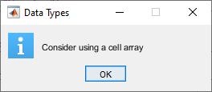 | uialert |
fig = uifigure; uialert(fig,"Consider using a cell array","Data Types", ... "Icon","info") 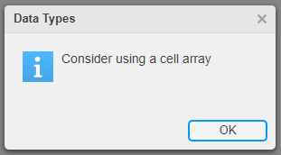 |
questdlg |
questdlg("Do you want to continue?","Confirm"); 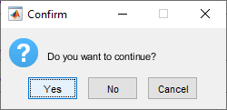 | uiconfirm |
fig = uifigure; uiconfirm(fig,"Do you want to continue?","Confirm", ... "Options",["Yes" "No" "Cancel"]) 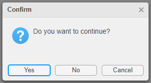 |
waitbar |
waitbar(0.3,"Loading...","Name","Please Wait"); 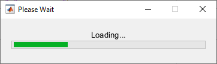 | uiprogressdlg |
fig = uifigure; uiprogressdlg(fig,"Value",0.3, ... "Message","Loading...", ... "Title","Please Wait"); 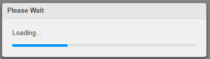 |